Script 00002427

状況は春花のスマホを通しておおむね把握している。
茜となつみちゃんはもうすぐ帰宅。
それに合わせて春花も五島ちゃんも来る。
茜となつみちゃんはもうすぐ帰宅。
それに合わせて春花も五島ちゃんも来る。
さて、こう大人数になるとなかなか面倒だ。
茜となつみちゃんさえ死んでくれたらそれでいいのだ。
春花に怪我をさせるわけにもいかないし、五島ちゃんははっきり言ってどうでもいい。
茜となつみちゃんさえ死んでくれたらそれでいいのだ。
春花に怪我をさせるわけにもいかないし、五島ちゃんははっきり言ってどうでもいい。
…………

やっぱりこれは使った方がいいか。
女だけであっても相手は4人。
できる限り素早く動かなくてはならない。
特に茜となつみちゃんには絶対に逃げられてはいけない。
女だけであっても相手は4人。
できる限り素早く動かなくてはならない。
特に茜となつみちゃんには絶対に逃げられてはいけない。

「…………」
やっぱり古郡宅の鍵は開いてないか。
ならば隣の自宅で待つしかない。
しかし茜は私のことを警戒しているだろう。
『私はいない』と茜に思い込ませる方法はないだろうか。
やっぱり古郡宅の鍵は開いてないか。
ならば隣の自宅で待つしかない。
しかし茜は私のことを警戒しているだろう。
『私はいない』と茜に思い込ませる方法はないだろうか。
よし、逆に考えよう。
私がここにいないと思わせたらいいのだ。
もしここから離れた場所で私を発見したら――。
茜たちは警察の車で来るし、道は大体決まっている。
私がここにいないと思わせたらいいのだ。
もしここから離れた場所で私を発見したら――。
茜たちは警察の車で来るし、道は大体決まっている。
それに……。
『これ』さえあれば。
しかし念のためだ、上着を羽織り、ナイフを何本か 懐 に忍ばせておく。
今からすることを考えれば、丸腰で動くのは得策ではない。
しかし念のためだ、上着を羽織り、ナイフを何本か 懐 に忍ばせておく。
今からすることを考えれば、丸腰で動くのは得策ではない。
自宅前に鉈と能面を置き、犯行に備える。
それに赤装束をかぶせておけば、ここを誰かが通っても多少なりとも不審物と認識されにくくなるだろう。
まあ私たちの部屋は奥の方だし、人などめったに通らないだろうけど。
それに赤装束をかぶせておけば、ここを誰かが通っても多少なりとも不審物と認識されにくくなるだろう。
まあ私たちの部屋は奥の方だし、人などめったに通らないだろうけど。
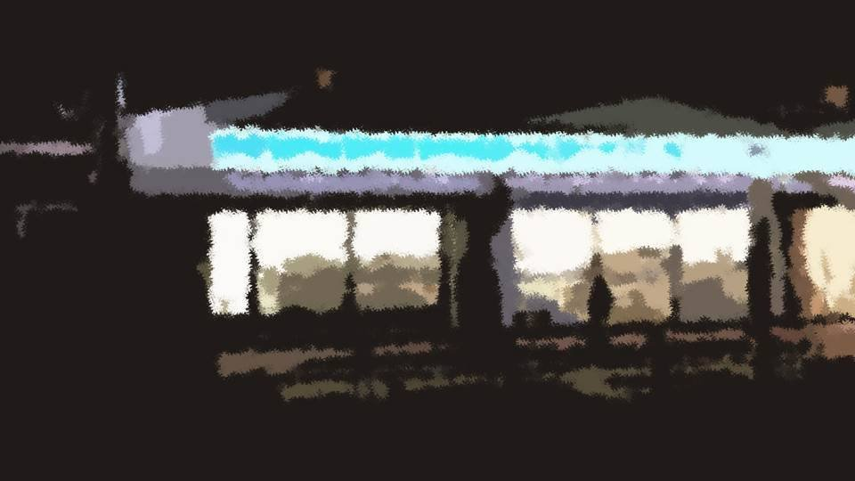
近くのコンビニの物陰で待ち伏せる。
警察署からマンションへ向かうなら間違いなくここを通る。
ここで私の姿を茜に目撃させることができればいい。
警察署からマンションへ向かうなら間違いなくここを通る。
ここで私の姿を茜に目撃させることができればいい。
と、さっそく向こうからパトランプのつかないパトカーが走ってくる。
おそらくあれに違いない。
私はパトカーに向けて思いきり手を挙げる。
するとパトカーは徐々に減速する。
ヒッチハイクとは違い、パトカーであれば止まらざるを得ないだろう。
おそらくあれに違いない。
私はパトカーに向けて思いきり手を挙げる。
するとパトカーは徐々に減速する。
ヒッチハイクとは違い、パトカーであれば止まらざるを得ないだろう。
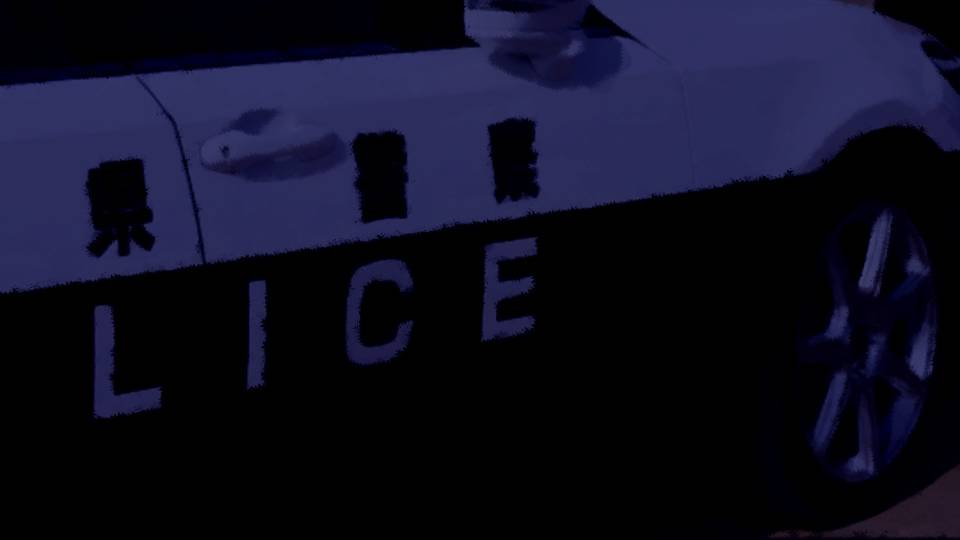
「どうしました？」
「すみません！ 後ろに知人が乗っているのが見えたんですけど！」
「え？」
「すみません！ 後ろに知人が乗っているのが見えたんですけど！」
「え？」


後部座席には、やはり茜となつみちゃん。
なつみちゃんは驚いた顔を見せ、茜はじっとこちらを睨んでいる。
なつみちゃんは驚いた顔を見せ、茜はじっとこちらを睨んでいる。
「ね、ねえ茜！ 春花の行先知らない！？
私、携帯なくしちゃって、家に帰ったら春花もいないし……！
ああもう、あんな事件があったばかりなのに……！」
キョトンとしているなつみちゃんと、相変わらず睨みつける茜。
そんなに睨んでどうするのかしら？ 私が犯人とでも言うの？
無理よね、そんなこと言ったら茜だって女ケ沢市事件の実行犯だと明らかになるもの。
キョトンとしているなつみちゃんと、相変わらず睨みつける茜。
そんなに睨んでどうするのかしら？ 私が犯人とでも言うの？
無理よね、そんなこと言ったら茜だって女ケ沢市事件の実行犯だと明らかになるもの。
「美冬、春花ちゃんなら五島ちゃんの家にいるはず。さっき電話したから心配しないで」
「そう……ならよかった……」
「あ、でもおばさん、春花たちは今から――
「そう……ならよかった……」
「あ、でもおばさん、春花たちは今から――

いたい！」
突然痛みを訴えるなつみちゃん。
おそらく、茜がなつみちゃんの脚をつねったのだろう。
突然痛みを訴えるなつみちゃん。
おそらく、茜がなつみちゃんの脚をつねったのだろう。
「ありがとう茜、私、五島ちゃんの家に行くから」
そして私は走り出し、
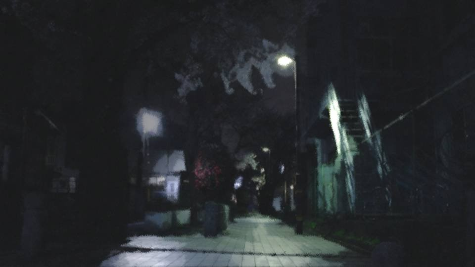
角を曲がったところで身を潜める。
パトカーはそのままマンションの方へと走り去っていった。
よし、これで私はマンションに潜んでいないと証明できた。
パトカーはそのままマンションの方へと走り去っていった。
よし、これで私はマンションに潜んでいないと証明できた。
にしても茜のあの態度。
私が良治さんを殺したと見抜いているに違いない。
それに盗聴器で春花の動向を把握していることも分かっているはず。
さっきのやり取りはただの茶番に終わったようだ。
私が良治さんを殺したと見抜いているに違いない。
それに盗聴器で春花の動向を把握していることも分かっているはず。
さっきのやり取りはただの茶番に終わったようだ。
そうなると、茜は余計に警戒するかもしれない。
家に着き次第、すぐに家の鍵をかけてしまうだろう。
隣にいないと思わせる作戦は失敗したと考えるべきだ。
ならば――。
家に着き次第、すぐに家の鍵をかけてしまうだろう。
隣にいないと思わせる作戦は失敗したと考えるべきだ。
ならば――。
さあ、迷っている暇はない。
これを一気に注射するのだ。
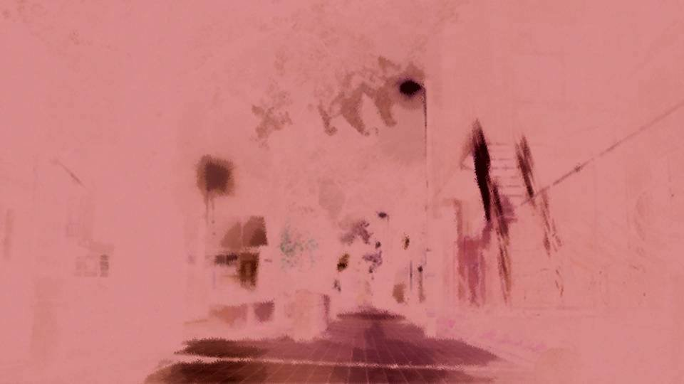
カッと身体が熱くなる感覚。
速くなる鼓動。
湧き上がってくる力。
速くなる鼓動。
湧き上がってくる力。
普通の人間なら今から走ってもパトカーには追いつけない。
普通の人間ならね。
普通の人間ならね。
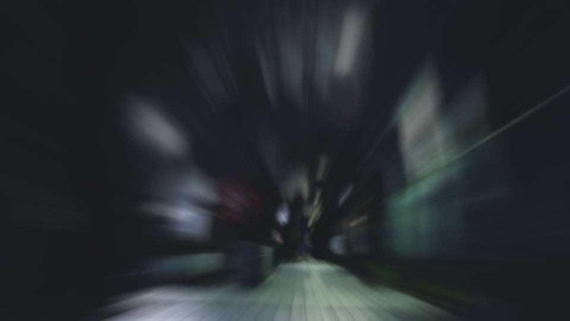
裏道を選びながら素早く移動する。
決して全力で走ってはいけない。
全力を出せばたちまち身体を壊してしまう。
あの距離であれば、せいぜい半分程度の力に抑える。
今倒れるわけにはいかないのだ。
2人を殺した後、すぐに春花を連れて荒田集落に逃げ込まなくてはならない。
決して全力で走ってはいけない。
全力を出せばたちまち身体を壊してしまう。
あの距離であれば、せいぜい半分程度の力に抑える。
今倒れるわけにはいかないのだ。
2人を殺した後、すぐに春花を連れて荒田集落に逃げ込まなくてはならない。
徒歩5分の距離を30秒足らずで移動できた。
マンションの前にはパトカーが停まっており、茜たちが出てくる。
茜と警察官のやり取りが聞こえる。
マンションの前にはパトカーが停まっており、茜たちが出てくる。
茜と警察官のやり取りが聞こえる。

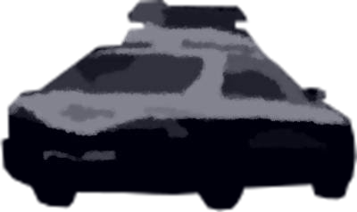
「では先ほど言いましたように、応援を呼んでしばらくこの辺の見回りと古郡宅の警護をしますので」
な……！
これではいくら薬を使っても手を出しにくい。
何か別の作戦を――。
な……！
これではいくら薬を使っても手を出しにくい。
何か別の作戦を――。
「いえ、やっぱり気が変わりました。どうぞ気をつけてお帰り下さい」
「はい！？」
「いいんです。ちゃんと施錠はしますから。 それに今日はもう、警察官と顔を合わせるのはうんざりです。 どうかお引き取りを」
「ダメですよ、伊勢警部補からも――」
「はい！？」
「いいんです。ちゃんと施錠はしますから。 それに今日はもう、警察官と顔を合わせるのはうんざりです。 どうかお引き取りを」
「ダメですよ、伊勢警部補からも――」
「これは強制ですか？
私が帰れと言っても帰らないんですか？」
「………… 分かりました」
「………… 分かりました」
警察官はパトカーに乗り込み、元来た道を走っていった。
なるほど、もし今から私が現れたら、女ケ沢市事件のことがばれてしまうかもしれない。
しかし、ここまで徹底して自己保身に走るとは。
私が茜の立場なら、例え犯人であることがばれようとも、娘の命を最優先するところだ。
しかし、ここまで徹底して自己保身に走るとは。
私が茜の立場なら、例え犯人であることがばれようとも、娘の命を最優先するところだ。
まあでも、10年前に私が『信頼できる人』という言葉を使ってあれだけ脅しておいたのだ。
もしなつみちゃんが女ケ沢市事件のことを知ってしまえば、荒田集落に目をつけられる、とでも思ったのだろうか。
その真意は不明だが、なかなかうまく事が運んでいる。
もしなつみちゃんが女ケ沢市事件のことを知ってしまえば、荒田集落に目をつけられる、とでも思ったのだろうか。
その真意は不明だが、なかなかうまく事が運んでいる。
「なつみは先に家に入ってて。ちゃんと鍵をかけてね」
「お母さんはどうするの？」
「さっきのパトカーに忘れ物しちゃってね。電話して戻ってきてもらうわ」
「そっか……」
「ちゃんと鍵をかけてチェーンもつけるのよ？」
「…………？ うん……」
「お母さんはどうするの？」
「さっきのパトカーに忘れ物しちゃってね。電話して戻ってきてもらうわ」
「そっか……」
「ちゃんと鍵をかけてチェーンもつけるのよ？」
「…………？ うん……」
なつみちゃんは1人でマンションへ入っていった。
これは私と対峙する準備ができたという合図だろう。
薬の効果時間もあるし、早く姿を現した方がいい。
私は堂々と茜の前に歩み寄る。
これは私と対峙する準備ができたという合図だろう。
薬の効果時間もあるし、早く姿を現した方がいい。
私は堂々と茜の前に歩み寄る。

「やっぱりいたのね」
「携帯見つかったのよ。そしたら春花がこっちに向かってるって」
「白々しい嘘はやめて。なつみを殺すつもりなの？」
「…………」
「よくも良治君を……」
「春花を奪い取ろうとするあなたたちが悪いんでしょ？ でなけりゃ何もするつもりなかったのに」
「携帯見つかったのよ。そしたら春花がこっちに向かってるって」
「白々しい嘘はやめて。なつみを殺すつもりなの？」
「…………」
「よくも良治君を……」
「春花を奪い取ろうとするあなたたちが悪いんでしょ？ でなけりゃ何もするつもりなかったのに」
「…………」
「3年前、元木町に帰るのは嫌だった。 栄一郎さんが死んだこの地に、なつみちゃんのいるこの場所にいることがどれほどの苦痛か。 春花の強い希望がなければこんな場所、一刻も早く去ってしまいたいわ」
「…………」
「3年前、元木町に帰るのは嫌だった。 栄一郎さんが死んだこの地に、なつみちゃんのいるこの場所にいることがどれほどの苦痛か。 春花の強い希望がなければこんな場所、一刻も早く去ってしまいたいわ」
「…………」
茜は何も話そうとしない。
なるほど、時間稼ぎか。
こうしている間に春花がやってくるし、私が薬を使っていると考えているなら、その効果が切れるのを待っている。
そう簡単にいくもんですか……！
なるほど、時間稼ぎか。
こうしている間に春花がやってくるし、私が薬を使っていると考えているなら、その効果が切れるのを待っている。
そう簡単にいくもんですか……！

「ぐ……！」
茜のみぞおちを殴り、気絶させる。
薬の効果を考え、できる限り弱い力で殴ったつもりだ。
こんなところで吐血して死なれたら面倒だ。
薬はまだ8分程度持続するはず。
薬の効果を考え、できる限り弱い力で殴ったつもりだ。
こんなところで吐血して死なれたら面倒だ。
薬はまだ8分程度持続するはず。

茜を抱え、階段を上る。
住人がこの階段を使うことはめったにない。
住人がこの階段を使うことはめったにない。
よし、外廊下にも人の気配はない。
茜のポケットを探り、古郡宅の鍵を取り出す。
茜のポケットを探り、古郡宅の鍵を取り出す。
なつみちゃんに気づかれないよう、そっと鍵を開ける。
が、
やはりチェーンがかかっている。
薬が効いているうちに手で引きちぎってしまおうか。
が、
やはりチェーンがかかっている。
薬が効いているうちに手で引きちぎってしまおうか。
いや、それはダメだ。
手で引きちぎったという痕跡が残るだろう。
そんな人間業から離れたことをしてしまえば、どうしても女ケ沢市事件とつながってしまう。
皮剥ぎ事件は、薬を使わずあくまでも人間に可能な範囲でやったことなのだ。
今日の事件を女ケ沢市事件とこじつけて説明しようにも、日付しか確固たる共通点はない。
手で引きちぎったという痕跡が残るだろう。
そんな人間業から離れたことをしてしまえば、どうしても女ケ沢市事件とつながってしまう。
皮剥ぎ事件は、薬を使わずあくまでも人間に可能な範囲でやったことなのだ。
今日の事件を女ケ沢市事件とこじつけて説明しようにも、日付しか確固たる共通点はない。
赤装束で隠しておいた鉈を手に取り、
チェーンを一気に叩き切ると、大きな音が外廊下に響き渡る。
この方法であれば普通の人間でもやろうと思えばできる。
この方法であれば普通の人間でもやろうと思えばできる。
しかしさすがに今の音でなつみちゃんは気づいただろうし、周囲の人たちに不審に思われるはず。
ここからは薬だけでなく、あらゆる面で時間との勝負になる。
茜を引きずり、赤装束と能面も回収して古郡宅へと押し入る。
ここからは薬だけでなく、あらゆる面で時間との勝負になる。
茜を引きずり、赤装束と能面も回収して古郡宅へと押し入る。

…………？
いない。
なつみちゃんはこの家にいるはず。
どこかに隠れている？
いない。
なつみちゃんはこの家にいるはず。
どこかに隠れている？
着信音――
それが台所の方から聞こえてくる。
茜と鉈、能面、赤装束をリビングに置き、台所を覗いてみると……。
茜と鉈、能面、赤装束をリビングに置き、台所を覗いてみると……。


流し台の下で震えながら身を潜めているなつみちゃんの姿。
「そんなところで何をしているの？」
「お……おばさん……？
どうしておばさんがここに……？」
この様子では、まだ私が犯人であることに気づいていないようだ。
この様子では、まだ私が犯人であることに気づいていないようだ。
「なつみちゃん、もう大丈夫よ。
良治さんを殺した犯人が押し入ろうとしたから、さっき私が後ろから殴って気絶させた」
これでなつみちゃんの警戒心を解き、一撃で殺しやすいようにしたつもり―― だったのだが。
これでなつみちゃんの警戒心を解き、一撃で殺しやすいようにしたつもり―― だったのだが。
なつみちゃんが私に抱きついてきた。
「うう……！ おばさん……！
どうしてお父さん殺されなきゃいけないの！？
どうして犯人はここまで押し入ってきたの！？」
つまらないことになった。
こう、しがみつかれては動きにくい。
時間もないし、早くこの子を――、
つまらないことになった。
こう、しがみつかれては動きにくい。
時間もないし、早くこの子を――、
「なつみ！ どきなさい！」
その声で振り返ると、私に向かって鉈を振り上げる人影――。
その声で振り返ると、私に向かって鉈を振り上げる人影――。
「うぐ……！」
頭に強い衝撃が走り、視界がぼやける。
どうやら、鉈でみね打ちされたようだ。
頭に強い衝撃が走り、視界がぼやける。
どうやら、鉈でみね打ちされたようだ。
「お、お母さん……？」
「なつみ！ 早く逃げて！」
「もしかして、おばさんが後ろから殴って気絶させた犯人って…… お母さん？ お母さんが犯人……？」
「犯人は美冬よ！ 逃げなさい！」
「なつみ！ 早く逃げて！」
「もしかして、おばさんが後ろから殴って気絶させた犯人って…… お母さん？ お母さんが犯人……？」
「犯人は美冬よ！ 逃げなさい！」
「茜……！
よくも……！」
手に不快な感触が走る。
ちょうど昨日、良治さんを刺したときと同じような感覚。
茜の腹に、懐にしまっておいたナイフが突き立っている。
ちょうど昨日、良治さんを刺したときと同じような感覚。
茜の腹に、懐にしまっておいたナイフが突き立っている。
「ぐ……美冬……！」
「あんたたちはもう終わりよ……！」
さらに懐からナイフを抜き、 同じく茜の腹に突き刺す。
「あんたたちはもう終わりよ……！」
さらに懐からナイフを抜き、 同じく茜の腹に突き刺す。
「な……なつみだけは……私が……！」
それでもなお、茜は鉈を振り上げようとする。
それでもなお、茜は鉈を振り上げようとする。
私の視界もまだ回復していない。
いくら薬を使っていても、これでは回避は難しい。
が、
いくら薬を使っていても、これでは回避は難しい。
が、
鉈がそのまま床に落ち、茜は膝をつく。
「なつみ……！ 逃げて……！」

「あ……
ああ……！」
なつみちゃんは腰を抜かし立ち上がることができないようだ。
ならば、まずは茜の方を――。
なつみちゃんは腰を抜かし立ち上がることができないようだ。
ならば、まずは茜の方を――。
しかしもう茜が立ち上がることはなかった。
茜は床に這い、浅くも荒い呼吸音が聞こえる。
もう、茜もこれまでか。
茜は床に這い、浅くも荒い呼吸音が聞こえる。
もう、茜もこれまでか。
「茜……。
もう終わりね。私、結局不幸の底から這いあがれなかった。
やっぱり元木町にいたら幸せになんてなれない。
だから私は荒田集落へ行く。春花を連れてね。
そのためには、目撃者は全員消えてもらわないといけない」
そのように茜に語りかけたのだが、すでに何の反応も見せない。
どうやらナイフは大動脈に達し、思ったより早く死んだようだ。
なつみちゃんの方を見ると――。
どうやらナイフは大動脈に達し、思ったより早く死んだようだ。
なつみちゃんの方を見ると――。
腰を抜かして立ち上がれないまま、ずり這いでリビングまで移動している。
もう、なつみちゃんもこれまで。
春花と血を分けたなつみちゃん―― この魔女ももう……。
もう、なつみちゃんもこれまで。
春花と血を分けたなつみちゃん―― この魔女ももう……。
「なつみちゃん、抵抗したら余計苦しいわよ？」
茜が落とした鉈を拾い、なつみちゃんへゆっくりと歩み寄る。
茜が落とした鉈を拾い、なつみちゃんへゆっくりと歩み寄る。
「い、いや……
いや！」
泣き声とも叫び声とも取れるが、震えて 囁 くような悲鳴。
私が荒田集落で動物を狩った時も、最後はこのようにして死んでいった。
私はせめて、動物たちが苦しまないようにとどめを刺したものだ。
だから―― この獲物も――。
泣き声とも叫び声とも取れるが、震えて 囁 くような悲鳴。
私が荒田集落で動物を狩った時も、最後はこのようにして死んでいった。
私はせめて、動物たちが苦しまないようにとどめを刺したものだ。
だから―― この獲物も――。
鉈でなつみちゃんの首をはねた。
壁に鮮血が舞い、ゴロリと首が床に転がる。
これが栄一郎さんを殺した魔女の最期。
春花と血を分けた妹の終わり。
何の感慨もない。
ただなすべきことをしたまで。
壁に鮮血が舞い、ゴロリと首が床に転がる。
これが栄一郎さんを殺した魔女の最期。
春花と血を分けた妹の終わり。
何の感慨もない。
ただなすべきことをしたまで。
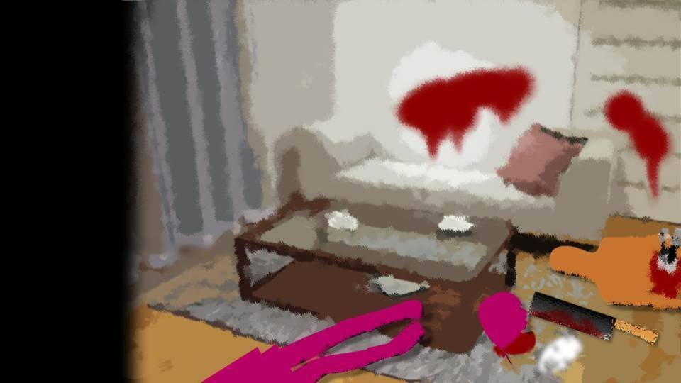
「ぐ……！」
視界が再びぼやけ、足に力が入らない。
茜から受けたダメージは予想よりも大きい。
自分の顔に手をやると、ベトリと血がつく。
これは返り血ではなく、みね打ちされて頭から出た血だ。
視界が再びぼやけ、足に力が入らない。
茜から受けたダメージは予想よりも大きい。
自分の顔に手をやると、ベトリと血がつく。
これは返り血ではなく、みね打ちされて頭から出た血だ。
それでも私はやるべきことをやらなくてはならない。
さあ、次にすべきことは…… 五島ちゃんを殺して…… 春花を……！
さあ、次にすべきことは…… 五島ちゃんを殺して…… 春花を……！
「うう……！」
次第に痛覚が噴き出してくる。
どうやら薬の効果が切れてしまったようだ。
あの薬には怪力や動体視力の向上だけでなく、強い鎮痛効果もあると聞いた。
思うように歩けない。
回復に時間がかかりそうだが、このままではここに春花が来てしまう。
次第に痛覚が噴き出してくる。
どうやら薬の効果が切れてしまったようだ。
あの薬には怪力や動体視力の向上だけでなく、強い鎮痛効果もあると聞いた。
思うように歩けない。
回復に時間がかかりそうだが、このままではここに春花が来てしまう。
それならここで私も倒れておき、死んだふりをしておくか。
隙を見て春花を気絶させてから五島ちゃんを速やかに殺す。
あとはそのまま春花を連れて荒田集落へ逃げ込むのだ。
自動車のガソリンも問題なかったはず。
隙を見て春花を気絶させてから五島ちゃんを速やかに殺す。
あとはそのまま春花を連れて荒田集落へ逃げ込むのだ。
自動車のガソリンも問題なかったはず。
と、外から大きな足音が聞こえてくる。
おそらく春花がこちらへ走ってきているのだろう。
そうか、なつみちゃんに電話をしたのは春花か。
電話に出ないから焦っているのだろうか。
おそらく春花がこちらへ走ってきているのだろう。
そうか、なつみちゃんに電話をしたのは春花か。
電話に出ないから焦っているのだろうか。
私はその場に寝転がり目を閉じ、耳で状況を確認する。
そこへちょうど春花が入り込んできた。
そこへちょうど春花が入り込んできた。
「う……！ 何だよこれ……！」
さすがにこの惨憺たる光景を目の当たりにし狼狽する春花。
と、そのまま台所の方へ走っていき――。
さすがにこの惨憺たる光景を目の当たりにし狼狽する春花。
と、そのまま台所の方へ走っていき――。
春花の吐瀉物がぶちまけられる音。
ごめんね春花、汚いものを見せてしまって。
もうすぐ、こんな汚い場所から逃げましょうね。
ごめんね春花、汚いものを見せてしまって。
もうすぐ、こんな汚い場所から逃げましょうね。
そして五島ちゃんも少し遅れて部屋に入ってきたようだ。
「なあ、見ろよ五島……。これでも呪いがないっていうのか？
ははは……。すごい、すごいよ！ 私、魔女だぜ？」
「に、新村先輩……違う……これは、呪いなんかじゃ……」
「に、新村先輩……違う……これは、呪いなんかじゃ……」
「なつみ……お前、まだ温かいな……。もう少し早く私が着いてれば、助けられたのかな……」
「なあ、五島……今までは私の憎いやつばかりが死んでいった。 でも、今回はなつみ……そしてお母さんまで……。 何でだよ……。お母さんの紙人形なんてなかったのに……」
「なあ、五島……今までは私の憎いやつばかりが死んでいった。 でも、今回はなつみ……そしてお母さんまで……。 何でだよ……。お母さんの紙人形なんてなかったのに……」
薄目を開けると――。

朦朧とした意識で映し出される世界――
春花はなつみちゃんの頭を持ち上げ語りかけている。
その姿を見て疑問が湧いてくる。
あなたのお父さんを殺したなつみちゃんを、どうしてそこまで気にかけていたの？
憎くないの？ 恨んでいないの？
その姿を見て疑問が湧いてくる。
あなたのお父さんを殺したなつみちゃんを、どうしてそこまで気にかけていたの？
憎くないの？ 恨んでいないの？
この時、何かおかしな感情が私の心臓に突き刺さった。
もう10年以上も感じていなかった、不思議な気持ち。
この気持ちは――何だろう。
もう10年以上も感じていなかった、不思議な気持ち。
この気持ちは――何だろう。
とても苦しく、息苦しい感情。
その感情は春花に対して向いている。
何なのだろう、この気持ち。
この感情の名前は確か――。
その感情は春花に対して向いている。
何なのだろう、この気持ち。
この感情の名前は確か――。
ようやくこの感情の正体が分かった。
久しぶりに心を覆う闇のような息苦しさ。
いや、心のどこかでこの気持ちを常に持っていた。
今、春花の姿を見て初めて自覚したのだ。
その気持ちの正体とは―― 罪悪感だった。
久しぶりに心を覆う闇のような息苦しさ。
いや、心のどこかでこの気持ちを常に持っていた。
今、春花の姿を見て初めて自覚したのだ。
その気持ちの正体とは―― 罪悪感だった。
春花が心の支えとしていたなつみちゃんを殺したことに、初めて罪悪感が湧いてきた。
不意にその罪悪感と疑問が脳を支配する。
それでも視界は歪み、ただただ目の前の光景を視覚が映すのみ。
そこに私の意識は入っていかない。
春花は茜に刺さっていたナイフを1本抜いた。
不意にその罪悪感と疑問が脳を支配する。
それでも視界は歪み、ただただ目の前の光景を視覚が映すのみ。
そこに私の意識は入っていかない。
春花は茜に刺さっていたナイフを1本抜いた。

「五島……私はお前も好きだ……だからきっと、お前も今日死ぬ」
「先輩……やめて！」
「先輩……やめて！」
どうしてだろう。
私も茜も、昔は互いを必要とする存在だった。
でも、何かきっかけがあればそんなもの、壊れてしまうのだ。
それなのに、春花となつみちゃんは……。
私も茜も、昔は互いを必要とする存在だった。
でも、何かきっかけがあればそんなもの、壊れてしまうのだ。
それなのに、春花となつみちゃんは……。
「先輩違う！ これは呪いじゃないんです！ 殺人なんです！ だから……」
春花となつみちゃんの仲って、どうすれば壊れたのかしら？
私のように、愛する人を奪われたら壊れる？
それとも…… それとも…… 何があるのだろう。
この2人の仲を引き裂くものって――。
春花となつみちゃんの仲って、どうすれば壊れたのかしら？
私のように、愛する人を奪われたら壊れる？
それとも…… それとも…… 何があるのだろう。
この2人の仲を引き裂くものって――。
「五島……もういい……。お母さんもなつみも死んだんだ……。もう、どうでもいい……。
いや……でも五島……お前はまだ生きている……五島……お前はまだ生きているんだよ……」
私と茜の仲を引き裂いたものって、何だったのかしら。
私がこんなことになっても、それでも茜は私に歩み寄ろうとしてくれていた。
春花は父親を奪われても、それでもなつみちゃんを必要としていた。
私がこんなことになっても、それでも茜は私に歩み寄ろうとしてくれていた。
春花は父親を奪われても、それでもなつみちゃんを必要としていた。
「五島……お前、死にたいか？」
「い、いや……！」
「はっきり言えよ！ 死にたいか死にたくないかはっきりしろよ！」
「し……し……死にたくないです……！」
「い、いや……！」
「はっきり言えよ！ 死にたいか死にたくないかはっきりしろよ！」
「し……し……死にたくないです……！」
もしかして……。
「ふうん……そっか……。そりゃそうだよな」
もしかして……
私……。
「五島……何を怖がっているんだよ……。もう大丈夫だよ……。はは……私を信じろよ」
「ううう……！ し、死にたくない……！」
「ううう……！ し、死にたくない……！」
私が間違えていたの？
自分の幸せを壊していたのって…… 私自身……？
自分の幸せを壊していたのって…… 私自身……？
「だから、もう心配するなって。
最初からこうすればよかったんだ……」
私、なぜこんなことをしたの？
「こうすれば、もう誰も殺さずに済む」」
「え……？」
これで私が幸せになれるの？
私は、どうすればよかったの？
「え……？」
これで私が幸せになれるの？
私は、どうすればよかったの？

「さよなら、五島。お前だけでも、生き延びてくれ……」
我に返った時、春花は自分の喉にナイフを突き立てていた。
私は急いで起き上がり、春花に注意を奪われていた五島ちゃんの後頭部を殴りつけた。
私は急いで起き上がり、春花に注意を奪われていた五島ちゃんの後頭部を殴りつけた。
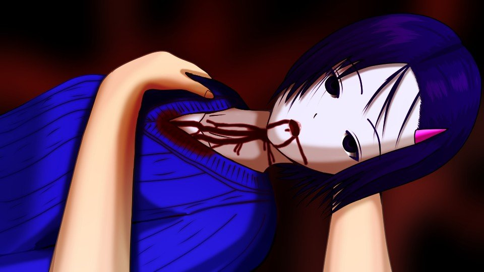
「春花！ 春花ーー！！」
「お……かあ……さん……？」
「どうして春花……！ なんてことを……！」
「おかあ…… 生きてた……」
「嘘……！ 嘘よ！ 春花！ 死んじゃダメ！ 独りにしないで！」
春花は何かを話そうとかすかに口を動かしたが――。
「お……かあ……さん……？」
「どうして春花……！ なんてことを……！」
「おかあ…… 生きてた……」
「嘘……！ 嘘よ！ 春花！ 死んじゃダメ！ 独りにしないで！」
春花は何かを話そうとかすかに口を動かしたが――。
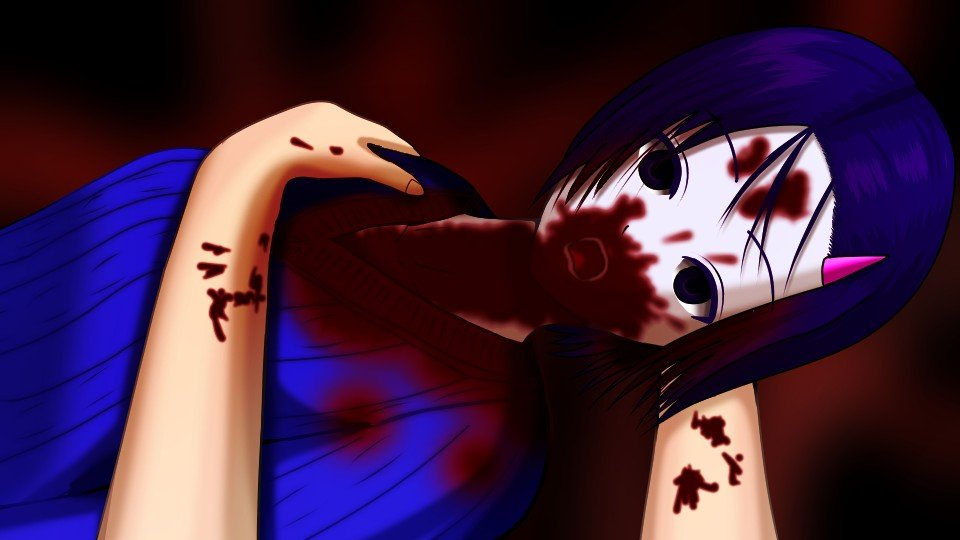
春花は大量の喀血を見せ痙攣する。
やがて全身の力が抜け、瞳孔の開いた目で天井を見つめ始めた。
やがて全身の力が抜け、瞳孔の開いた目で天井を見つめ始めた。
何？ これ……。
何が起きているの？
どうしてみんな死んでいるの？
どうして血まみれなの？
誰が……こんなことをしたの？
何が起きているの？
どうしてみんな死んでいるの？
どうして血まみれなの？
誰が……こんなことをしたの？
分かっている。
こんなことになったのは私のせい。
私が自分の幸せを自分でぶち壊していた。
親友も―― 娘も―― 娘の妹も―― 親友の夫も――。
私がぶち壊していた。
みんな、私に歩み寄ろうとしてくれていたのに。
こんなことになったのは私のせい。
私が自分の幸せを自分でぶち壊していた。
親友も―― 娘も―― 娘の妹も―― 親友の夫も――。
私がぶち壊していた。
みんな、私に歩み寄ろうとしてくれていたのに。
今になって巨大な津波のごとく後悔が襲い掛かってくる。
もしあの時、良治さんの交渉を聞いていたら。
もしあの時、茜たちに殺人を頼まなかったら。
もしあの時…… 栄一郎さんの死を、人のせいにしなかったら……。
もう、何もかも終わりだ。
もしあの時、良治さんの交渉を聞いていたら。
もしあの時、茜たちに殺人を頼まなかったら。
もしあの時…… 栄一郎さんの死を、人のせいにしなかったら……。
もう、何もかも終わりだ。
いや、1つだけ希望がある。
私は小さな人影に目を向ける。
私は小さな人影に目を向ける。
五島ちゃんが気を失い、倒れている。
春花は五島ちゃんを命と引き換えに助けようとした。
ならばせめて…… せめて春花が最後にしようとしたことを、私が……。
春花は五島ちゃんを命と引き換えに助けようとした。
ならばせめて…… せめて春花が最後にしようとしたことを、私が……。
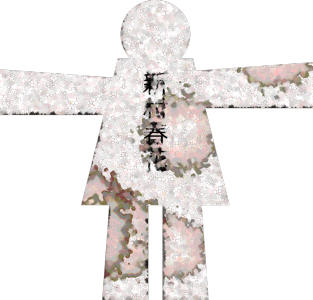
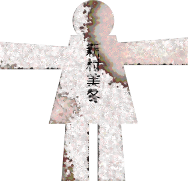
私と春花の紙人形を作り、台所の吐瀉物につけた後、五島ちゃんのポケットに押し込んだ。
そして五島ちゃんを玄関まで運び、
そして五島ちゃんを玄関まで運び、

壁に寄りかけて座らせる。
さらに毛布を風呂場でぬらして彼女にかぶせる。
さらに毛布を風呂場でぬらして彼女にかぶせる。
これで五島ちゃんは助かるはず。
でも、荒田集落に迷惑をかけるわけにはいかない。
五島ちゃんには、このことを呪いと思い続けてもらうしかない。
できるだけ彼女の証言を混沌としたものにしなくては。
でも、荒田集落に迷惑をかけるわけにはいかない。
五島ちゃんには、このことを呪いと思い続けてもらうしかない。
できるだけ彼女の証言を混沌としたものにしなくては。
でもこれでは不十分だ。
残りの薬も、私に注射したばかりの薬も、見つかるわけにはいかない。
残りの薬も、私に注射したばかりの薬も、見つかるわけにはいかない。

なつみちゃんの部屋には、灯油式の反射ストーブ。
春の寒い時期、風を嫌うなつみちゃんはこれで部屋を暖めていたらしい。
この中にはたくさんの灯油が入っている。
春の寒い時期、風を嫌うなつみちゃんはこれで部屋を暖めていたらしい。
この中にはたくさんの灯油が入っている。
灯油タンクを開けてリビングにまき、さらに台所のガスのホースを断ち切る。
この薬は高熱にさらすことで検出されなくなるらしい。
だから…… 私は……。
この薬は高熱にさらすことで検出されなくなるらしい。
だから…… 私は……。
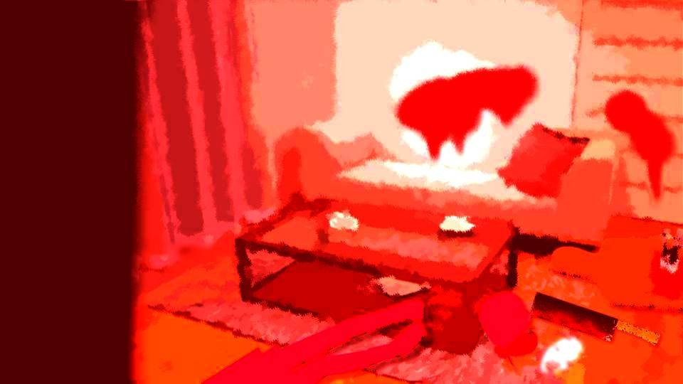
火をリビングに放つと、この闇のように重い空気が赤く染まっていく。
茜も、春花も、なつみちゃんも、炎が燃え移っても何の反応も見せてくれない。
対して私は、その耐え難い熱さに身をよじる。
さらに炎は勢いを増し、私の肌を焼き焦がしていく。
茜も、春花も、なつみちゃんも、炎が燃え移っても何の反応も見せてくれない。
対して私は、その耐え難い熱さに身をよじる。
さらに炎は勢いを増し、私の肌を焼き焦がしていく。

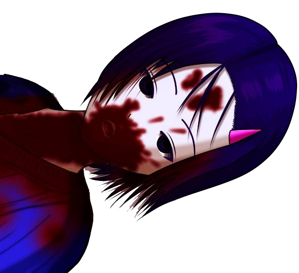
その時、ガスに引火したのか、爆発音と共に視界が揺らめく。
呼吸をすると高熱の空気が肺を焼き、不完全燃焼したガスが私の意識を奪っていく。
もはや皮膚の痛覚すらなくした私は、そのまま春花の横に倒れ込む。
呼吸をすると高熱の空気が肺を焼き、不完全燃焼したガスが私の意識を奪っていく。
もはや皮膚の痛覚すらなくした私は、そのまま春花の横に倒れ込む。
春花の白かった肌が、醜く焦げていく。
17年間そばにいた娘の最後の姿がこれ。
春花、ごめんね、こんな最低の母親で……。
春花となら、幸せになれると思ったのに……。
その幸せを母親に壊されるなんて―― きっと許してもらえないわよね。
17年間そばにいた娘の最後の姿がこれ。
春花、ごめんね、こんな最低の母親で……。
春花となら、幸せになれると思ったのに……。
その幸せを母親に壊されるなんて―― きっと許してもらえないわよね。
しかし、果てようとする意識の中で『春花に許されない』という考えを自分で否定した。
春花は何があってもなつみちゃんを必要としていた。
問題なのは、私がこのようにネガティブな結論を出してしまっていたことだ。
その否定が正しいのであれば、春花は私を許してくれるだろうか。
春花はまた、私を母親として認めてくれるだろうか。
春花は何があってもなつみちゃんを必要としていた。
問題なのは、私がこのようにネガティブな結論を出してしまっていたことだ。
その否定が正しいのであれば、春花は私を許してくれるだろうか。
春花はまた、私を母親として認めてくれるだろうか。
もしそうなら――
私は春花の母親になれてよかった。
春花、私のところに来てくれてありがとう。
春花、私のところに来てくれてありがとう。
そして……
ごめんね、春花……。